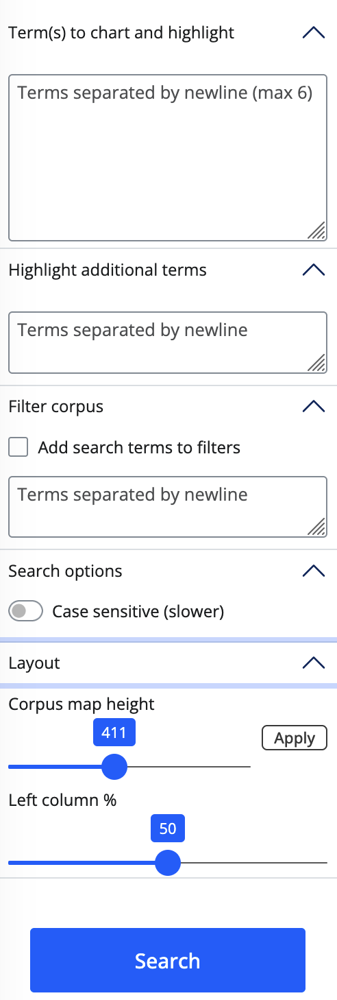
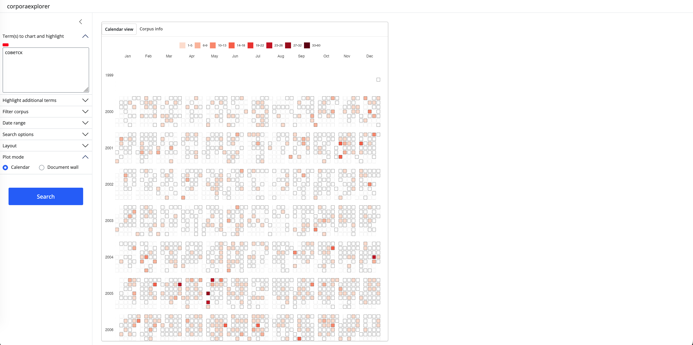
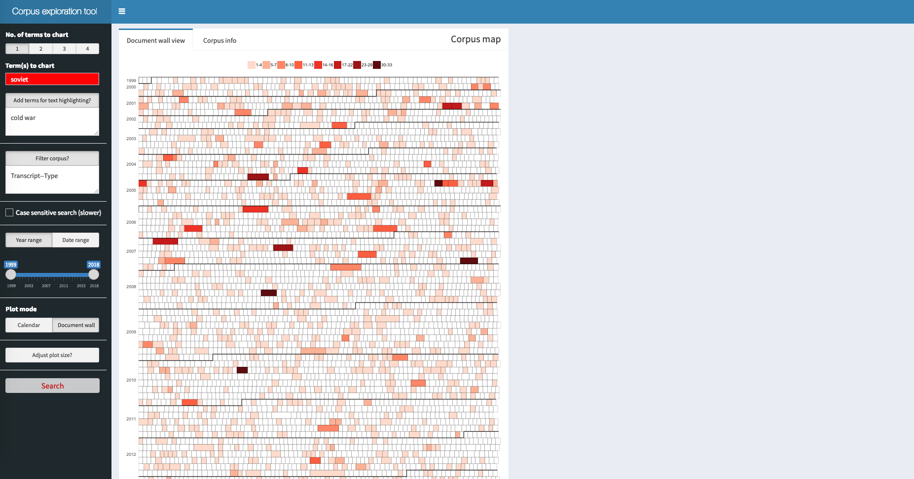
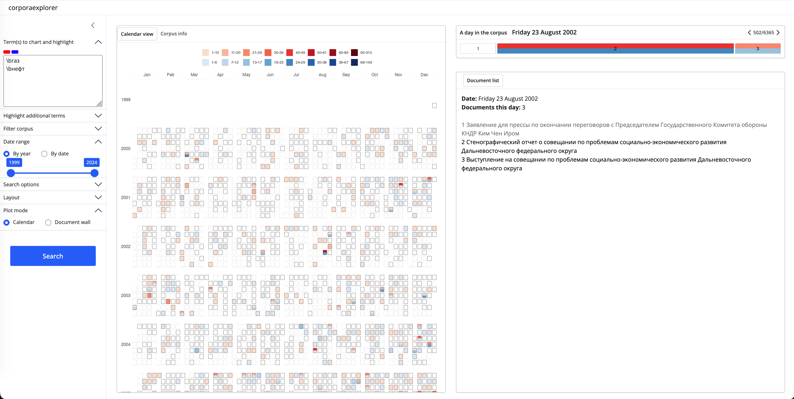
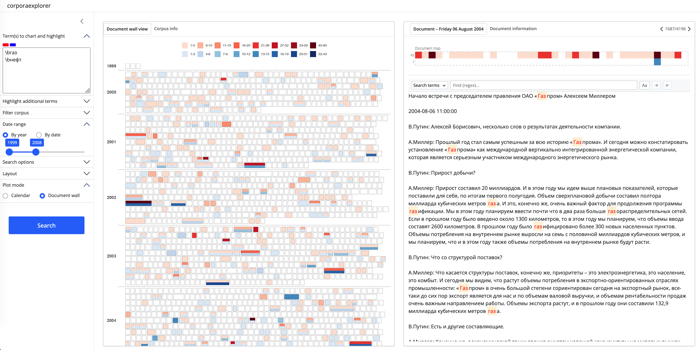
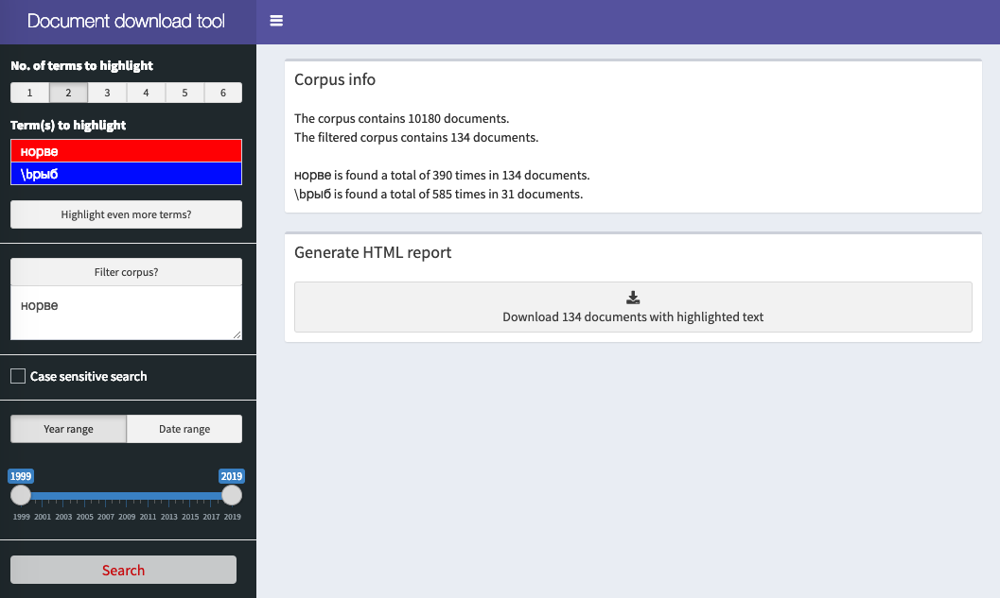

This document presents corporaexplorer’s three main functions:
prepare_data() converts a data frame to a “corporaexplorerobject”.explore() runs the package’s core feature, a Shiny app for fast and flexible exploration of a “corporaexplorerobject”.run_document_extractor() runs a Shiny app for simple retrieval/extraction of documents from a “corporaexplorerobject” in a reading-friendly format.See the reference section for full details and all available options.
The prepare_data() function returns a “corporaexplorerobject” that can be explored in the package’s two Shiny apps.
The three most important arguments are:
dataset: a data frame with, as a minimum, a Text column. If date_based_corpus is TRUE (the default), dataset must also contain a column “Date” (of class Date).date_based_corpus. Default is TRUE. Set to FALSE if the corpus is not to be organised according to document dates.grouping_variable. If date_based_corpus is TRUE, this argument is ignored. If date_based_corpus is FALSE, this argument can be used to group the documents, e.g. if dataset consists of chapters belonging to different books, and the book indicated in a “Book” column, set this argument to "Book".The rest of the arguments can be used to fine-tune the presentation of the corpora in the corporaexplorer apps.
prepare_data can also be run with a character vector as only argument. In this case the function will return a simple “corporaexplorerobject” with no metadata.
After installing corporaexplorer, run the following in the R console to see full documentation for the prepare_data() function.
library(corporaexplorer)
?prepare_dataStart the app by running the explore() function with a “corporaexplorerobject” created by prepare_data() as argument. Run the following in the R console to see documentation for the explore() function.
library(corporaexplorer)
?exploreThe default arguments are recommended for most use cases.
While it should be possible to use the app without reading any further, the rest of this section includes user interface instructions as well as some details about the app’s inner workings that are relevant for advanced users. A date-based corpus is used as example.

war will find both “war” and “War”; if checked, war will only find “war”.All text input will be treated as regular expressions (or regexes). Regular expressions can be very powerful for identifying exactly the text patterns one is interested in, but this power comes at a high complexity cost. That said, for simple searches that do not include punctuation, all one needs to know is basically this:
\b in a search means the beginning or the end of a word.. in a search means “any single character”.Thus, (in a case insensitive search):
arctic # will match both "Arctic" and "Antarctic"
\barctic # will match only "Arctic"
civili.ation # will match both "civilisation" and "civilization"For more about regex syntax and the regex flavours available, see the section about regex engines below.
(N.B. As seen in the example, a single backslash (not a double backslash as in the R console) is used as escape character. For example will \. match a literal “.”, and \d match any digit.)
corporaexplorer offers two optional arguments that can be used separately or together by adding them to the end of a search pattern (with no space between):
--threshold and determines the minimum number of search hits a day/document should contain in order to be coloured in the corpus map:
Russia--10 # Will find documents that includes the pattern "Russia" at least 10 times.--column_name and allows for searches in other columns than the default full text column:
Russia--Title # Will find documents that has the pattern "Russia" in its "Title" column.
Russia--2--Title
Russia--Title--2
# Will both find documents that includes the pattern "Russia" at least 2 times
# in the Title column.These arguments have the following consequences:
Russia--Title will in the corpus map plot colour only documents with the pattern Russia in the Title column, but the pattern Russia will be highlighted in all documents.The result of the search is an interactive heat map, a corpus map, where the filling indicates how many times the search term is found (legend above the plot).
In the calendar view (only for date-based corpora), each tile represents a day, and the filling indicates how many times the search term is found in the documents that day:

In the document wall view, each tile represents one document, and the filling indicates how many times the search term is found in this document:

The Corpus info tab presents some very basic summary statistics of the search results. (Look at e.g. quanteda and tidytext for excellent R packages for quantitative text analysis. Using such packages together with corporaexplorer is highly recommended in order to combine qualitative and quantitative insights.)
Clicking on a tile in the corpus map opens the document view to the right of the corpus map.
When in calendar view: Clicking on a day creates a second heat map tile chart where one tile is one document, and where the colour in a tile indicates how many times the search term is found in the document. In the box below is produced a list of the title of the documents this day.

Clicking on a “document tile” produces two things. First, the full text of the document with search terms highlighted. Second, above the text a tile chart consisting of n tiles where each tile represents a 1/n part of the document, and where the colour in a tile indicates whether and how many times the search term is found in that part of the document. Clicking on a tile scrolls the document to the corresponding part of the document.

When in document wall view: Clicking on a tile in the corpus map leads straight to the relevant document.
explore() lets you choose among three regex engine setups:
default: use the re2 package for simple searches and the stringr package for complex regexes (details below). This is the recommended option.stringr for all searches.re2for all searches.re2 is very fast but has a more limited feature set than stringr, especially in handling non-ASCII text, including word boundary detection. With the default option, the re2 engine is run when no special regex characters are used; otherwise stringr is used. This option should fit most use cases.
Please consult the documentation for re2 and stringr for full information about syntax flavours.
By default, searches for patterns consisting of a single word and without special characters will be carried out in a document term matrix. Other searches are carried out in full text.
Advanced users can set the optional_info parameter in explore() to TRUE: this will print to console the following information for each input term: which regex engine was used, and whether the search was carried out in the document term matrix or in the full text documents.
This app is a simple helper app to retrieve a subset of the corpus in a format suitable for close reading.

Start the app by running the run_document_extractor() function with a “corporaexplorerobject” created by prepare_data() as argument. Run the following in the R console to see documentation for the run_document_extractor() function.
library(corporaexplorer)
?run_document_extractorwar will find both “war” and “War”; if checked, war will only find “war”.By default, there is an upper limit of 400 documents to be included in one report (can be changed in the max_html_docs parameter in run_document_extractor()).
Speed is considered to be of less importance in this app, and all searches are carried out as full text searches with stringr. Again, note that a single backslash is used as escape character. For example will \. match a literal “.”, and \d match any digit.